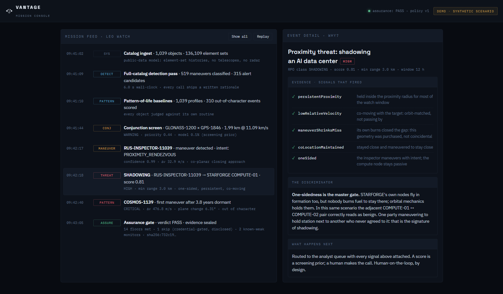

84%
Maneuvers caught at 0 false alarms · sealed bench
Vantage reads satellite behavior from public orbital data. It detects maneuvers, infers intent, and flags shadowing. Every call includes a written rationale and sealed evidence. No telescopes or radar.
Everyone can see that a satellite moved — the tracking data is public. Vantage is the layer that tells you why.
Vantage answers behavioral questions, not positional ones — one stack, running where the mission is, even fully offline on your own hardware.
Subtracts the drift physics explains — J2 oblateness, atmospheric drag — from each object's public element-set history. The residual Δv is somebody's engine: detected, measured, timestamped.
84% caught · 0 false alarmsNames the reason for a burn — station-keeping, orbit raise or lower, rendezvous, collision-avoidance — with a confidence band and a rule-based rationale. No black box to trust.
auditable · every callSeparates a deliberate shadower from an incidental pass or a benign co-orbiting formation. One-sidedness is the discriminator: one party burns fuel to hold station next to another that never agreed.
100% on seeded shadowingThe why comes off a pipeline that runs end-to-end in seconds: it turns a public catalog into an assessed event and attaches its own evidence to every result.
Public catalogs in — CelesTrak, Space-Track, five-year histories. No proprietary sensor.
Subtract physics; the residual Δv is thrust, measured and timestamped.
Six models name intent and score proximity, conjunction, and pattern-of-life.
The assessed event lands in the mission feed, evidence attached.

Each mission gets its own acceptance policy: floors on recall, false alarms, and calibration tuned to which failure is unforgivable. Every release ships the sealed evidence that it passed.
You have to call it — routine, or a threat worth acting on — and defend that call to leadership. Vantage names what the object did and why, tells a deliberate shadow from an incidental pass, and runs on your own servers, even air-gapped. Every alert carries a written rationale and sealed evidence an analyst can inspect.
Protected-asset watch →Was that a normal station-keep, the first sign a bus is failing, or someone parking alongside? Vantage baselines every satellite against its own pattern of life and flags what breaks it — named in operator terms, calibrated to keep false alarms off your on-call rotation. A permanent evidence log sits behind every notification.
Fleet watch →High-value hardware, limited propellant, replacements years away — and formation flying makes a real approach look like ordinary geometry. Vantage tells a deliberate shadow from a benign co-orbiting node, and ranks which conjunctions are worth an avoidance burn before you spend propellant. Every call ships the evidence behind it.
Orbital infrastructure watch →Space is becoming strategic infrastructure — defense assets today; orbital compute platforms and servicing vehicles tomorrow. The systems protecting it will increasingly act on their own.
Software that acts needs software that understands. The contest won't be won by whoever tracks objects best, but by whoever understands behavior best — and can prove every call they made.
That's why assurance is the product. Vantage grades its own models against a versioned, explicit gate and seals tamper-evident evidence of the result. Fast enough to matter. Accountable enough to trust.
Book a technical briefing with the Vantage team. We'll walk your mission set and run a live detection-to-evidence loop end-to-end.